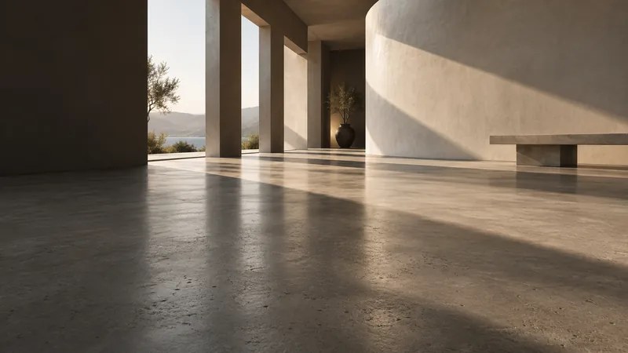
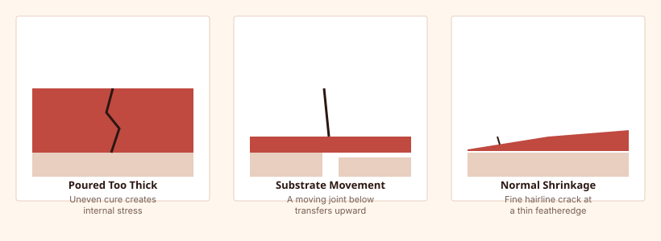

Cracking is usually caused by pouring thicker than the product's rated depth, an incorrect (usually excessive) water ratio, fast uneven drying from drafts or direct sun, or movement in the substrate beneath the pour. Hairline shrinkage cracks are sometimes cosmetic; wider or growing cracks usually indicate a substrate or mixing issue that needs to be addressed before flooring goes down.

Shrinkage Cracks
All cementitious materials shrink slightly as they cure and lose moisture. Fine, hairline shrinkage cracks are common and often considered a normal, mostly cosmetic occurrence, particularly at thin featheredges — though excessive water in the mix makes shrinkage cracking worse and more likely to be structurally meaningful.

Depth-Related Cracking
Pouring beyond a product's rated maximum single-lift depth is one of the most common causes of significant cracking, since a thick pour cures unevenly from the surface down, creating internal stress. See our thickness guide for typical depth ranges and how to handle deeper low spots.
Substrate Movement
If the substrate beneath the pour is moving — for example, an unsecured plywood subfloor with deflection, or an existing slab with an active structural crack — that movement typically transfers into the self-leveling layer above it. Structural movement issues generally need to be addressed at the substrate level before any self-leveling repair will hold.
Environmental Causes
Direct sun, drafts, or forced-air heating blowing across a curing pour can dry the surface much faster than the material below it, creating stress between layers that shows up as surface cracking. Covering windows and blocking HVAC airflow to the room during cure helps prevent this.
Repair Options
Fine hairline cracks that don't move or grow can often be filled with an appropriate crack filler compatible with the self-leveler before flooring installation. Cracks tied to an active substrate issue, or cracks that are wide, growing, or accompanied by hollow-sounding areas, generally need the affected section removed and the underlying cause addressed before re-pouring.
Frequently Asked Questions
Are hairline cracks in self-leveling concrete normal?
Fine, non-moving hairline cracks from normal shrinkage are common and often considered cosmetic, but should still be evaluated if they're widespread or appear alongside other issues like hollow spots.
Will flooring installed over a cracked self-leveling pour also crack?
It can, particularly with rigid flooring like tile — a condition called reflective cracking. Wider or active cracks are usually addressed before flooring is installed, not covered over.
Related Guides
Sources & References
- ASTM standards and manufacturer guidance on cementitious underlayment shrinkage and cracking